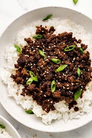

Bulgogi Ground Beef Stir Fry

Ingredients
(These yield 4 servings)
- 1 pound ground beef
- 1/2 tablespoon low sodium soy sauce
- 1 tablespoon olive oil
- 1 white onion,cut in half and sliced
- 1 red bell pepper,cut into small pieces
- 1 head baby bok choy,stalk and leaves
chopped separately, divided
- 2 cups snow peas, stringed and corners trimmed
- 3 cloves garlic, minced
- 5 ounces bulgogi marinade
- Salt and freshly ground black pepper
- 2 cups hot cooked white rice, for serving
- cilantro leaves (optional)
Steps
- Gather all ingredients. Preheat a cast iron skillet
and a large wok-style pan to medium-high heat.
- Lightly season the beef with salt and pepper. Add beef to the cast iron skillet,
and allow to lightly sear before gently breaking
it up into small chunks, but not too fine.
- Add in soy sauce. Cook until beef is no longer pink, then set aside.
- Add beef tallow to the wok. Add onions and saute just to get some color on them.
Add bell pepper and chopped bok choy stalks; stir fry for 1 to 2 minutes.
Add in snow peas, then garlic. Cook, stirring regularly to ensure everything softens but also stays crisp.
- Add in bok choy leaves last. Give all the vegetables 1 full stir, then add bulgogi marinade.
Stir, then stir beef into the mix.
- Serve over hot white rice; garnish with cilantro leaves.
Home